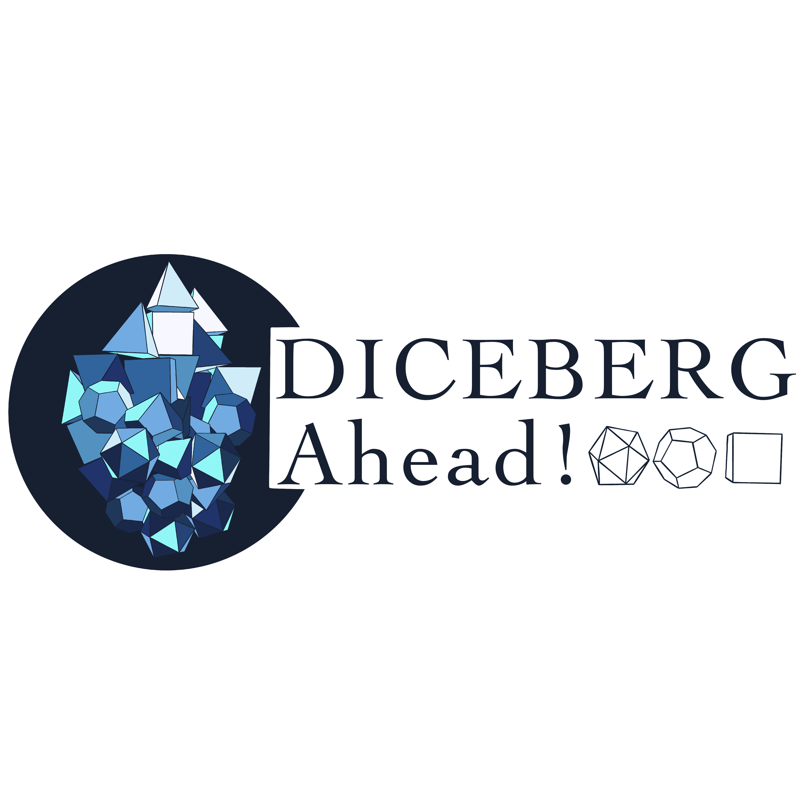

z FROM THE BUSTLING AIRWAYS OF CYDONIA, TO THE RUGGED FRONTIER . . . z The REDROCK Podcast is an actual play podcast in a homebrew setting for Edge Studio's GENESYS. It's Fantasy Steampunk Cowboys on Mars.
The city of Feuri has been encased within a magic dome for the last three centuries, but events lead a few brave adventurers to emerge and explore the unknown wastes and wilds outside. Emergence is an actual play podcast in a homebrew setting previously played in D&D fifth Edition and currently played in Pathfinder Second edition.
REDROCK was the first podcast campaign to launch the DICEBERG Ahead! family. Creator -- Juliette Croyle began recording REDROCK in Twenty-Nineteen as a way to note-take a home campaign.
Emergence launched a year later from REDROCK's release, Game Mastered by Hunter Olson. Now on season four, Emergence is a kitchy game that explores friendship, honor and grief.
Our main podcast channel! Your one-stop shop for One-Shots, Crew Discussions, Mini-Campaigns, and more!